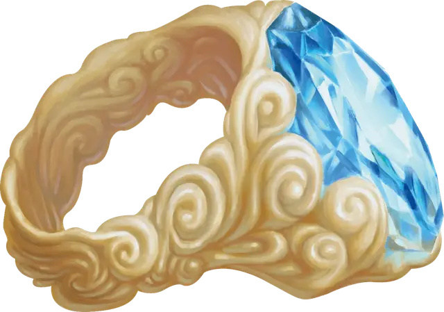

Кольцо призыва джинна
Ring of Djinni Summoning
Кольцо, легендарное (требуется настройка)

Рекомендованная стоимость от 50 001 зм
Нося это кольцо, вы можете действием произнести его командное слово, чтобы призвать конкретного джинна [djinni] со Стихийного Плана Воздуха. Джинн появляется в свободном пространстве, выбранном вами в пределах 120 футов от себя. Он остаётся, пока вы концентрируетесь (как при концентрации на заклинании), но не более 1 часа, или пока его хиты не опустятся до 0, после чего он возвращается на домашний план.
Будучи призванным, джинн дружелюбен к вам и вашим спутникам. Он повинуется командам, которые вы отдаёте, вне зависимости от использованного языка. Если вы не отдаёте приказы, джинн защищается от нападающих, но не совершает других действий.
После того как джинн возвращается на родной план, его нельзя призвать повторно, пока не пройдёт 24 часа, и кольцо перестаёт быть магическим, если джинн умирает.